NC Flash WiCAN Manual
Set up the WiCAN PRO adapter to read, flash and datalog your NC over Wi-Fi, without a cable to the laptop.
What you need
Quick start
Do these once. After step 3, firmware updates install from the WiCAN page.
-
Download the firmware
Open the latest firmware release. Under Assets, download only the file named
wican-fw_obd_pro_v…bin. You do not need the other files; they are for USB flashing.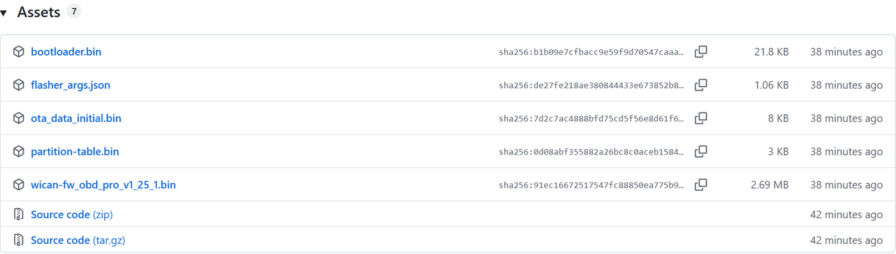
Take the wican-fw_obd_pro_…binfile (2.7 MB). Ignore bootloader, partition-table, ota_data and flasher_args. -
Connect to the WiCAN
Plug the WiCAN into the car. On your phone or PC, join its Wi-Fi network:
- Network name:
WiCAN_followed by 12 letters and numbers - Password:
@meatpi#
Then open
http://192.168.0.10in a browser. Some older stock firmware useshttp://192.168.80.1. - Network name:
-
Install the NC Flash firmware
A new WiCAN runs the stock meatPi firmware, so its page looks different from the screenshots here. Find its firmware update box (under About or System, depending on the version). Choose the
.binfile, press Update, and wait about 30 seconds while it restarts.When the page comes back with the black NC logo, the firmware is installed.
-
Put the WiCAN on your Wi-Fi
Go to Settings:
- Mode: choose AP+Station.
- AP Password: change it. The page will not save while the default
@meatpi#is still there. - Network Configuration: press Scan or type your Wi-Fi name (SSID), then its Password.
- Press Submit Changes at the bottom. The WiCAN restarts.
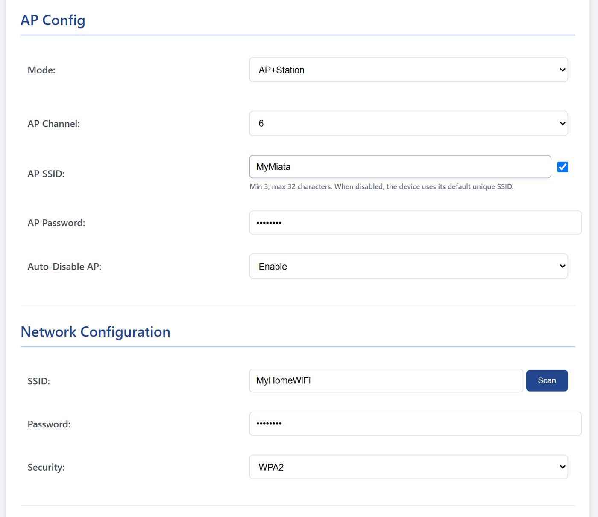
Settings → AP Config and Network Configuration. The hotspot name (AP SSID) is optional. Join your normal Wi-Fi again and open the WiCAN by its new address. To find the address, open Status while you are still on the WiCAN's hotspot, or look in your router's device list. Station IP is the number to use. mDNS is a name that also works in Chrome.
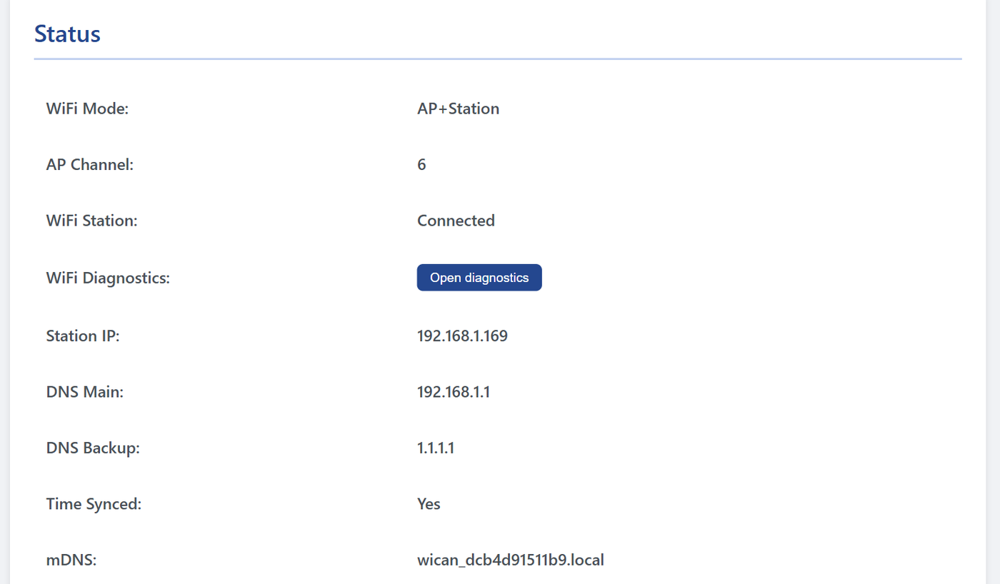
Status → Station IP and mDNS. Write the Station IP down; NC Flash needs it. -
Point NC Flash at the WiCAN
Install NC Flash from its releases page (
NCFlash-…-Setup.exe). If Windows SmartScreen stops it, click More info → Run anyway.Open Edit → Settings… and make two changes:
- ECU → Adapter: set ECU Adapter to WiCAN (WiFi). This is the step people miss: NC Flash uses the wired J2534 cable by default.
- ECU → WiCAN: press Scan… and pick your WiCAN, or type its Station IP. Press Test Connection. You should see Connection OK.
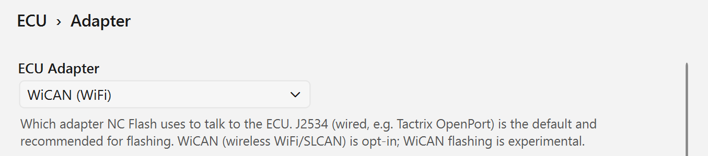
Settings → ECU → Adapter → WiCAN (WiFi). 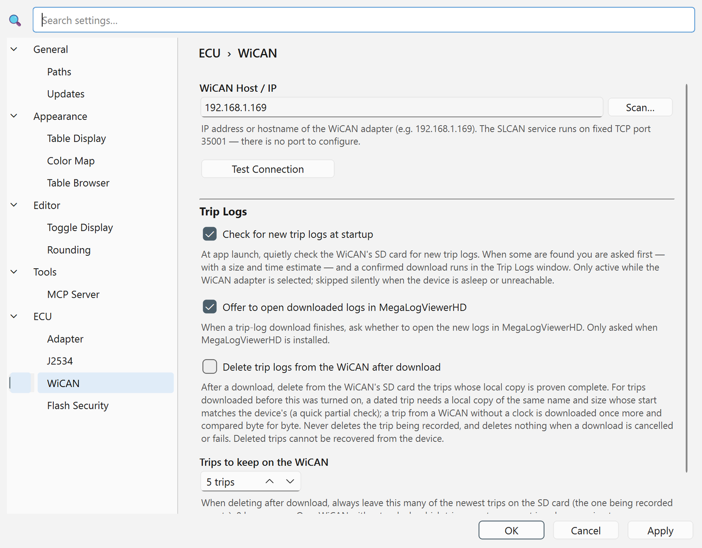
Settings → ECU → WiCAN. Enter the host, then Test Connection. -
Connect to the car and back up your ROM
Ignition ON, engine OFF. In NC Flash open Tools → ECU Programming… (Ctrl+Shift+E). It connects by itself and shows battery, engine and ECU.
Before anything else, press Read ROM to save your stock ROM. Keep that file somewhere safe; it is how you go back to factory. A full read takes about 4 minutes over Wi-Fi.


Logging is off on a new WiCAN. Open Logger, set Logging to Enable, and press Submit Changes. From then on, every drive is logged to the SD card. The rest of this manual explains each part.
The WiCAN page
Open the WiCAN's address in a browser. The menu on the left has seven pages:
| Page | What it is for |
|---|---|
| Console | Start or stop a trip by hand, and download recent trip logs. The top bar shows SD card, Wi-Fi, firmware version and battery voltage. |
| Files | Browse, download or delete files on the SD card. |
| Logger | When to log, how fast, and which sensors. See Datalogging. |
| Settings | Wi-Fi, sleep mode, time zone, LED. Press Submit Changes to save. |
| Status | Station IP, mDNS name, Wi-Fi state, battery, uptime. |
| System | Firmware update, reboot, back up or restore the settings. |
| About | Version information. |

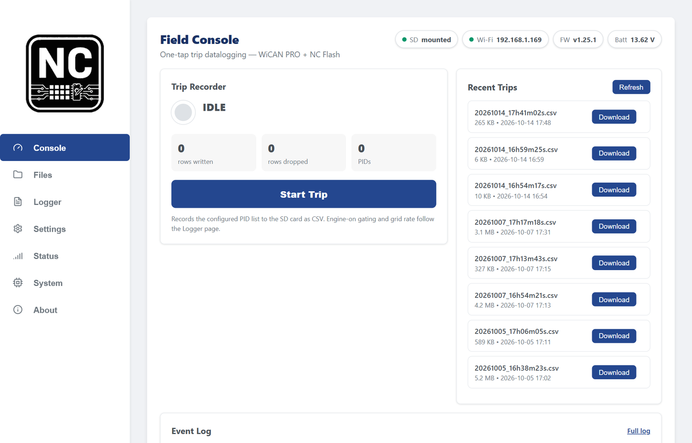
Wi-Fi setup
The three modes
| Mode | What happens | Use it when |
|---|---|---|
| AP+Station | Joins your Wi-Fi. When your Wi-Fi is out of range (on the road), it makes its own hotspot instead. | Most people. Recommended. |
| AP Mode | Only its own hotspot, at 192.168.0.10. | No Wi-Fi where the car is. Connect the laptop to the hotspot. |
| Station Mode | Only your Wi-Fi. No hotspot. | The car never leaves your Wi-Fi. |
- Auto-Disable AP: turns the hotspot off while the WiCAN is on your Wi-Fi, and back on when it is not. Leave it on Enable. It avoids Wi-Fi trouble.
- AP SSID: tick the box to give the hotspot your own name, for example
MyMiata. - Backup Networks: up to 5 more Wi-Fi networks (a shop, a phone hotspot). The WiCAN tries them when the main one fails.
- NC Flash works with any of the three modes. Just use the address the laptop can reach.
On your Wi-Fi, use the Station IP from the Status page (for example 192.168.1.169). The wican_….local name works in Chrome but not in every program. When it fails, use the IP.
Datalogging
Once Logging is enabled, the WiCAN logs to its SD card by itself. A log starts when the engine runs and ends when you stop it. You do not need the laptop in the car.

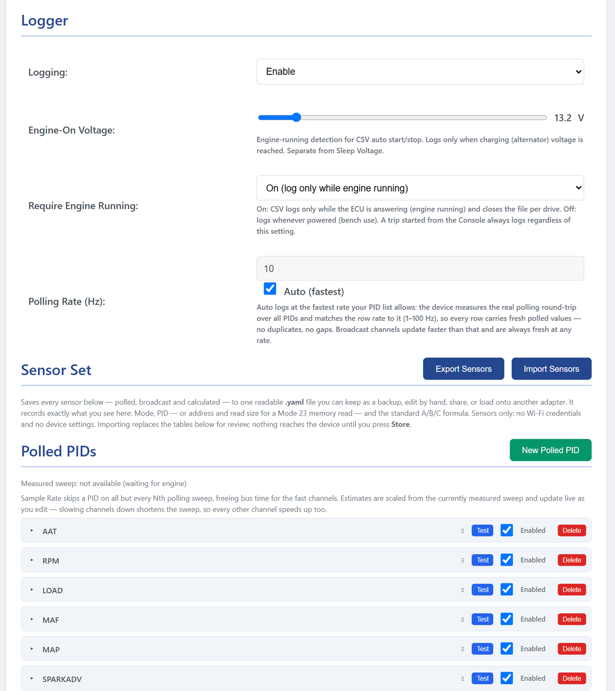
Logger settings
- Logging: Enable to record trips.
- Require Engine Running: On logs only while the engine runs, one file per drive. Off logs whenever the WiCAN has power (bench use).
- Engine-On Voltage: the battery voltage that means "engine running" (alternator charging). The default, 13.0 V, suits most cars.
- Polling Rate: leave Auto (fastest) ticked. The WiCAN measures how fast your sensor list can go and logs at that rate.
Sensors
The firmware ships a ready-made NC sensor list. There are three kinds:
| Kind | What it is | Examples |
|---|---|---|
| Polled | Asked from the ECU on each sweep: standard OBD (Mode 01), Mazda extended (Mode 22) or a memory read (Mode 23). | RPM, LOAD, MAF, SPARKADV, STFT, LTFT |
| Broadcast | Read from messages the car already sends on its CAN bus (the dashboard data). Nothing is asked, so they are fast. | 0x201 speed, 0x240 coolant |
| Calculated | Made from other sensors with a formula. | BOOST, AFR, FUEL_IDC |
- Untick Enabled on sensors you do not need. Fewer polled sensors means a faster log.
- Export Sensors saves the whole list as a
.yamlfile: a backup, or a way to share it. Import Sensors loads one. Nothing is saved on the WiCAN until you press Store. - If a red note at the top says the list did not load, reload the page before you change anything.
Manual trips
On the Console, Start Trip records right away, even with the engine off. Press it again to stop. Each trip is one .csv file named by date and time.
Logs in NC Flash
NC Flash downloads trip logs from the SD card over Wi-Fi. Open Tools → WiCAN Trip Logs… (this menu item only shows when the adapter is set to WiCAN).

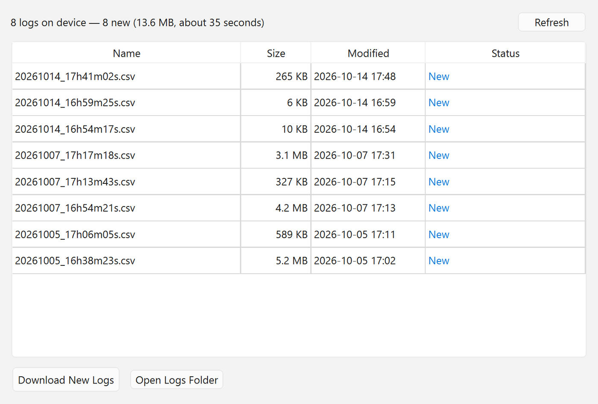
- Downloads run at about 0.7 MB/s. The window shows a time estimate first.
- At startup, NC Flash checks for new logs and asks before it downloads (Check for new trip logs at startup).
- If MegaLogViewerHD is installed, NC Flash offers to open the new logs in it.
- Delete trip logs from the WiCAN after download keeps the SD card from filling up. It only deletes files it has checked, and keeps the newest few (Trips to keep on the WiCAN, 5 by default).
Live data on the laptop while driving is not available yet. Logs are recorded on the WiCAN and read afterwards.
Read & flash the ECU
- Back up your stock ROM first with Read ROM. Without it you cannot go back to factory.
- Ignition ON, engine OFF. NC Flash blocks the flash if the engine runs.
- Battery at 12.0 V or more. Use a charger or battery maintainer. A voltage drop during a flash can leave the ECU unable to start the car.
- Keep the laptop near the car, and do not turn the key off until NC Flash says it is done.

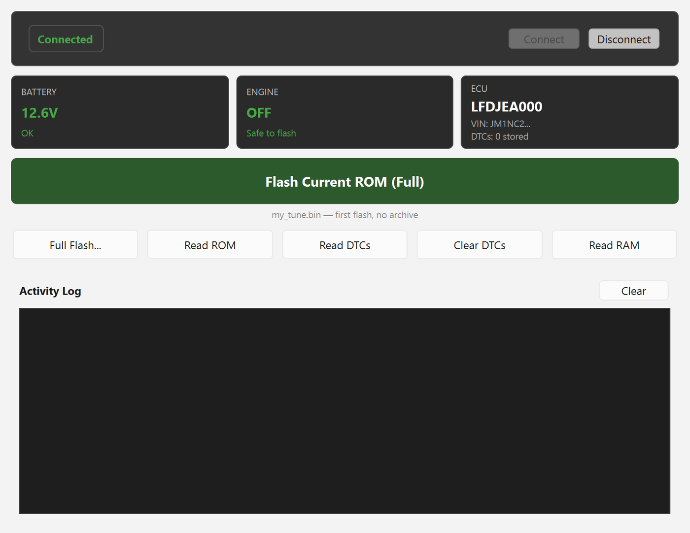
The buttons
| Button | What it does |
|---|---|
| Flash Current ROM | Flashes the ROM open in the editor. (Full) writes everything. (Dynamic) writes only the changed blocks; it appears after the first flash of a project. |
| Full Flash… | Writes a complete ROM file. |
| Read ROM | Saves the ECU's ROM to a file in the reads folder, then opens that folder. |
| Read DTCs / Clear DTCs | Shows or clears stored trouble codes. |
| Read RAM | Saves the ECU's live memory to a file. For advanced use. |
How a wireless flash works
NC Flash first uploads the ROM to the WiCAN's SD card and checks it. Only then does the WiCAN flash the ECU itself, over the car's wiring. Wi-Fi is not used while the ECU is being written, so a Wi-Fi drop cannot stop the flash halfway. NC Flash also tests the Wi-Fi link first and refuses to start on a bad link.
When it finishes, the ECU restarts by itself. Turning the key OFF and back ON afterwards is a good check that the new ROM starts.
Reading and flashing need NC Flash's flash security module. Check Settings → ECU → Flash Security. If it says Not installed, contact the project maintainer.
NC Flash folders
By default NC Flash keeps everything in %APPDATA%\NCFlash, and the open and save windows start in its roms folder. To work from your own folder, open Settings → General → Paths:
- Workspace Directory moves everything at once.
- ROMs Directory is where open and save windows start.
- Trip Logs Directory is where WiCAN logs are saved.

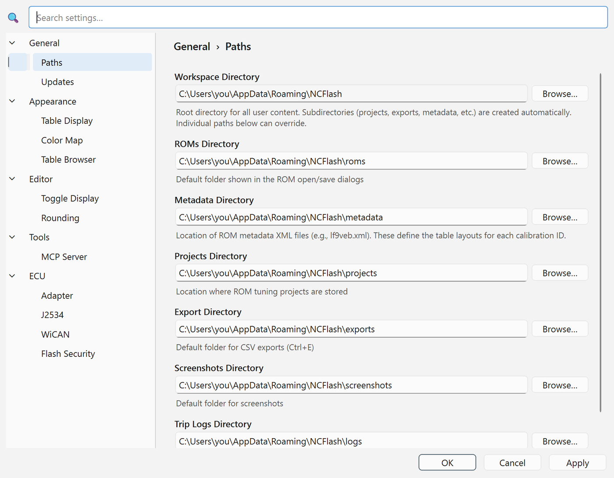
Sleep mode
The WiCAN stays plugged in, so it sleeps to protect the battery. Settings → Sleep Mode:
- Sleep Voltage: 13.0 V. Below this the engine is off, and the WiCAN starts counting. Do not set it near 12.4 V: a resting battery sits above that, so the WiCAN would never sleep.
- Sleep After: minutes below the sleep voltage before it sleeps. The default is 5.
- Wake on CAN: Enable. The WiCAN wakes when the car's network wakes up (key on).
The WiCAN never sleeps during an ECU flash or a firmware update. While it sleeps, the page and NC Flash cannot reach it. Turn the key to wake it.
Updates & recovery
WiCAN firmware
Download the new wican-fw_obd_pro_…bin as in step 1. Then open System → Firmware Update, choose the file, press Update. Your settings and sensors are kept. The WiCAN refuses to update while a flash is running.

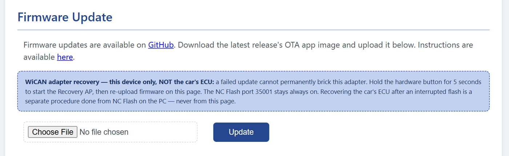
If an update fails: hold the WiCAN's button for 5 seconds. It starts a recovery hotspot named WiCAN_… (password @meatpi#). Join it, open http://192.168.0.10, and upload the firmware again. This only repairs the WiCAN. It has nothing to do with the car's ECU.
NC Flash
NC Flash checks GitHub for a new version once a day and offers to install it. You can also use Help → Check for Updates.
Back up your settings
System → Download Configuration saves all WiCAN settings to a file. Upload Configuration puts them back.
Troubleshooting
| You see | Cause | Fix |
|---|---|---|
| J2534 bridge: PassThruOpen failed: code 8 | NC Flash is still set to the wired cable. | Settings → ECU → Adapter → WiCAN (WiFi). |
| Connection Refused … nothing is listening on SLCAN port 35001 | The WiCAN runs stock or old firmware. | Install the NC Flash firmware (steps 1–3). |
| Firmware Too Old | The firmware is older than NC Flash needs. | Update the firmware: System → Firmware Update. |
| Connection Failed / Could not reach the WiCAN | Wrong address, WiCAN asleep, or a different network. | Turn the key on. Check the Station IP on the Status page. Same Wi-Fi as the PC. |
| No Devices Found (Scan…) | Different network, or a firewall blocks UDP port 5353. | Type the Station IP instead. |
| AP password MUST be changed from default | The hotspot still uses @meatpi#. | Set a new AP Password (8 to 63 characters), then Submit. |
| wican_….local does not open | Not every browser or program finds .local names. | Use the Station IP. |
| ECU stopped answering. Check the ignition is ON | Key off, or the ECU went quiet. | Ignition ON, then Connect again. |
| Engine Running — Flash Blocked | The engine is running. | Engine off, ignition ON. |
| Low Battery Voltage | Battery under 12.0 V. | Connect a charger and try again. |
| WiCAN not reachable (device off or asleep) | The WiCAN is asleep or out of range. | Turn the key on, wait a few seconds, press Refresh. |
| Logger list is empty or shows a red note | The page did not load the sensors. | Reload the page. Do not press Store on an empty list. |